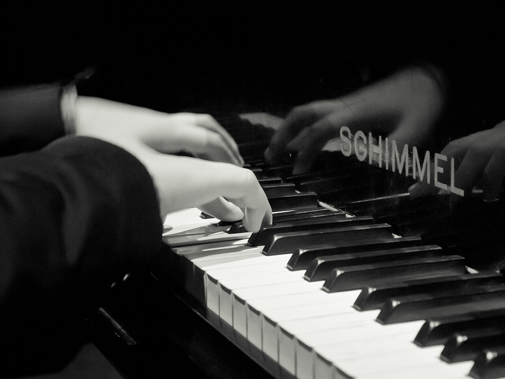

Музыка · 17-бөлім · Аккорд Music · Section 17 · Chord & Triad Музыка · Раздел 17 · Аккорд и трезвучие
Бірге шыққан үш және одан да көп дыбыс — үндестік. Үшдыбыс — оның негізі. Three or more sounds taken together make a chord. The triad is its foundation. Три и более звука, взятые вместе, — это созвучие. Трезвучие — его основа.
Аккорд — бір мезгілде алынған үш және одан да көп дыбыстан тұратын үндестік. A chord is a sonority of three or more sounds taken at the same time. Аккорд — созвучие из трёх и более звуков, взятых одновременно.
Үшдыбыс (трезвучие) — терцияға (бір сатыдан асырып) орналасқан үш дыбыстан тұратын аккорд. A triad is a chord of three sounds stacked in thirds (skipping a degree each time). Трезвучие — аккорд из трёх звуков, расположенных по терциям (через ступень).
Классикалық мысал: до–ми–соль. Әр дыбыстың арасы — терция. The classic example: C–E–G (до–ми–соль). Each gap is a third. Классический пример: до–ми–соль. Между звуками — терция.
💡 Әр аккорд — үндестік, бірақ әр үндестік үшдыбыс емес. Үшдыбыс — терцияға тізілген дәл үш дыбыс. 💡 Every chord is a sonority, but not every chord is a triad. A triad is exactly three sounds stacked in thirds. 💡 Любой аккорд — созвучие, но не всякий аккорд — трезвучие. Трезвучие — это ровно три звука по терциям.
| ТүріTypeВид | ҚұрылымыStructureСтроение | СипатыCharacterХарактер |
|---|---|---|
| ☀️ Мажор☀️ Major☀️ Мажорное до–ми–соль |
үлкен терция + кішіmajor 3rd + minorбольшая терция + малая | жарық, көңілдіbright, joyfulсветлое, радостное |
| 🌙 Минор🌙 Minor🌙 Минорное до–ми♭–соль |
кіші терция + үлкенminor 3rd + majorмалая терция + большая | күңгірт, мұңдыdark, sadтёмное, грустное |
📌 Қосымша: кемітілген үшдыбыс (екі кіші терция, тым шиеленіскен) және ұлғайтылған үшдыбыс (екі үлкен терция, тұрақсыз) де бар. 📌 Advanced: there are also the diminished triad (two minor thirds, tense) and the augmented triad (two major thirds, unstable). 📌 Дополнительно: бывают также уменьшённое трезвучие (две малые терции, напряжённое) и увеличенное (две большие терции, неустойчивое).

🎧 пернелерді бірге басып, до–ми–соль үшдыбысын жинаңыз press the keys together to build the C–E–G triad нажмите клавиши вместе, чтобы собрать трезвучие до–ми–соль
Айналым — сол дыбыстардың басқа ретпен орналасуы: ең төменгі дыбыс жоғары көшіріледі. Дыбыстар сол қалпында, бірақ басы өзгереді. An inversion uses the same sounds in a different order: the lowest note moves to the top. The notes stay the same, only the bass changes. Обращение — те же звуки в другом порядке: нижний звук переносится наверх. Звуки те же, меняется лишь нижний (бас).
🎧 әр айналымды басып тыңдаңыз — дыбыстар сол, реті басқа tap each inversion — same notes, new order нажмите каждое обращение — звуки те же, порядок другой
Үшдыбыс Root position Трезвучие
До · Ми · Соль
C · E · G
Секстаккорд (6) First inversion (6) Секстаккорд (6)
Ми · Соль · До
E · G · C
Квартсекстаккорд (6/4) Second inversion (6/4) Квартсекстаккорд (6/4)
Соль · До · Ми
G · C · E
📌 Үш айналымда да дыбыстар бірдей: до, ми, соль. Тек ең төменгі (бас) дыбыс ауысады, сондықтан реңк сәл өзгереді — бірақ бұл бәрібір сол аккорд. 📌 In all three positions the sounds are the same: C, E, G. Only the lowest (bass) note changes, so the colour shifts a little — yet it is still the same chord. 📌 Во всех трёх положениях звуки одни и те же: до, ми, соль. Меняется лишь нижний (бас) звук, поэтому окраска чуть иная — но это всё тот же аккорд.